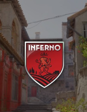

CS2 Wingman Picker
Spin the maps or eliminate them until one Wingman map remains.
Current Result

Press Spin
The selected map will appear here.
Game Info
Mode: Random Spin
Remaining Maps: 6
Last Removed: None
Wingman Maps
Choose which Wingman maps should be included before spinning.
Selected Maps: 6